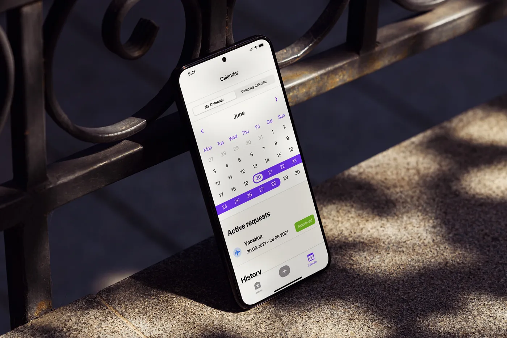
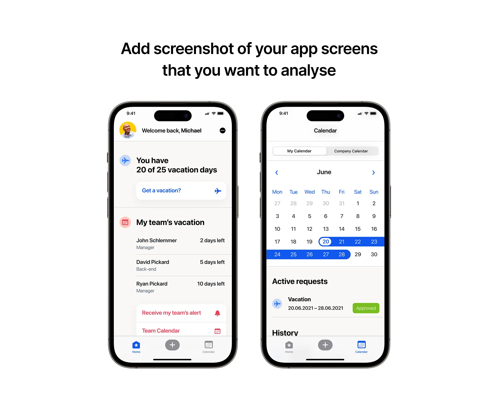
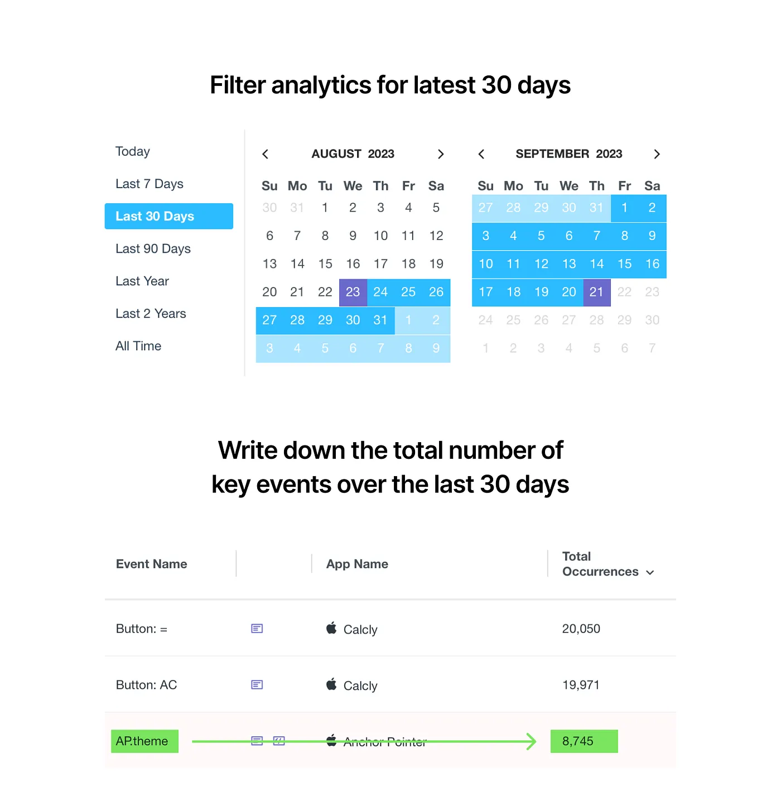
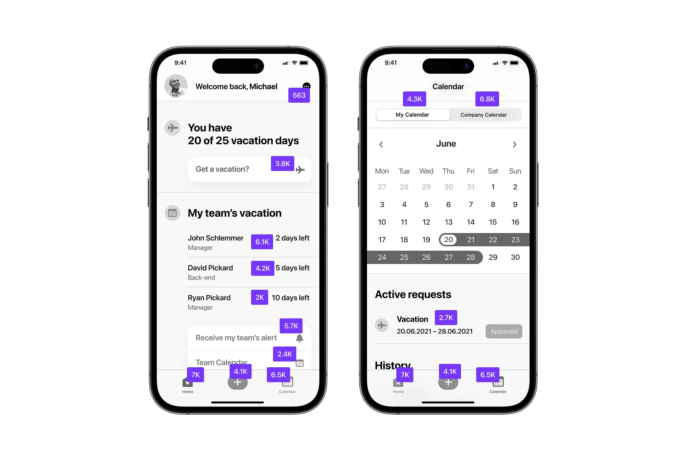
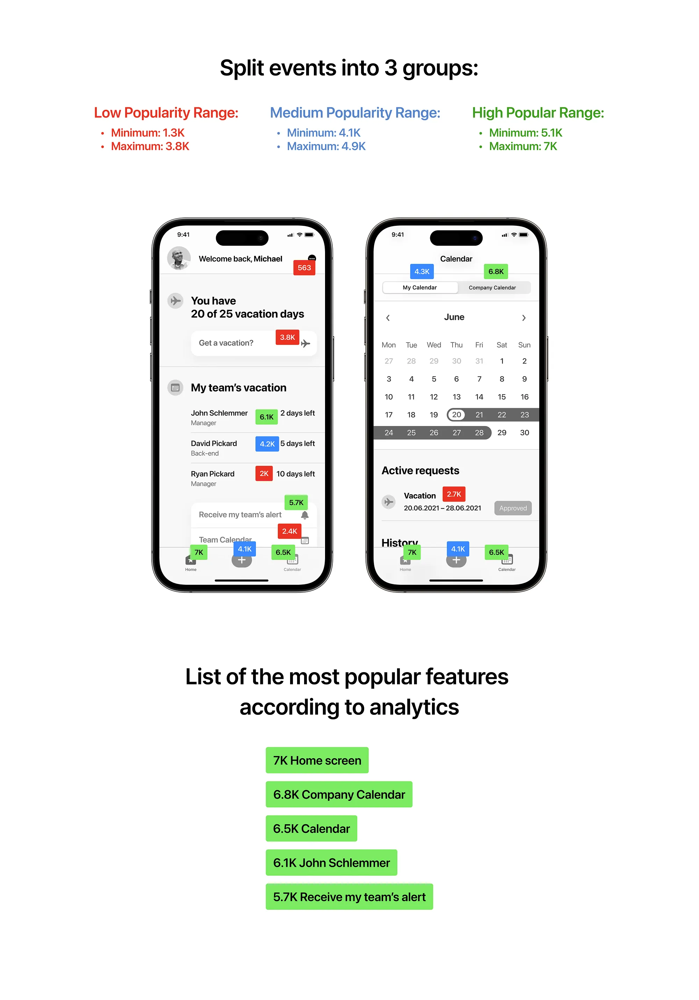

How to Boost Mobile App Usage With a Simple Analytics Analysis
Introduction
If you are working on an app interface, you need to know very well how people are using your app.
In order to improve usage, you need to find an answer to what exactly is popular amount of users and what isn’t.
Sometimes app analytics can be very tricky, depending on the complexity of your app, your level of expertise in data analysis and the variety of techniques that require skills to work well. So after a while you might feel that you don’t use analytics very often.

There are many techniques for using analytics to improve app usage, but I’m going to share some simple and specific ones about one screen usage.
How to improve mobile screen usage with this simple analytics trick
-
The first thing you need to do is make sure that your analytics API is tracking most of the buttons on the screen. Try to set it up to track as many as possible.
-
Take a screenshot of the screen and put in Figma.

- In your analytics set filter by total even amount per latest 30 days.

- Take the usage number of each button and place it on top of each element. As you can see, I am also desaturating the UIs to make the event tags more visible.

- Usually I split numbers into 3 groups: low popularity (red), medium popularity (blue), high popularity (green). You can use ChatGPT and ask to split your numbers into these three categories, so you don’t have to calculate it.
Ask ChatGPT to take these numbers and split into 3 groups by low amount, medium and max amount 563, 3.8K, 6.1K, 4.2K, 2K, 5.7K, 2.4K, 6.5K, 5.1K, 7K, 4.3K, 6.8K, 2.7K, 3.4K, 5.6K, 6.9K, 4.9K, 5.3K, 6.4K, 3.8K, 6.2K, 1.3K, 5.8K, 4.7K, 3.6K, 7K, 3K, 5.2K, 4.1K, 6.5K
Ask ChatGPT to create rage min/max for each group

Now you have a perfect view of what’s happening on your app’s screen. Now you can analyse and improve app usage, or argue with your team for design changes based on analytics. You can also track the impact over time.
As a next step, you can ask further questions:
- Should we improve the use of red elements?
- Why aren’t users interested in red elements? Maybe they don’t need them, or maybe they can’t find them?
- If users are interested in green elements, should we make them more accessible (more visible, move on top)?
- How can we improve blue elements to make them green?